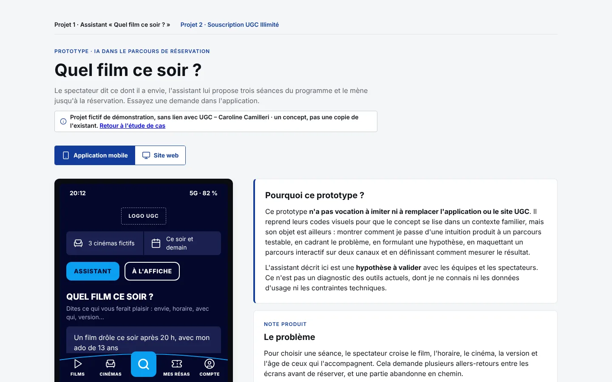
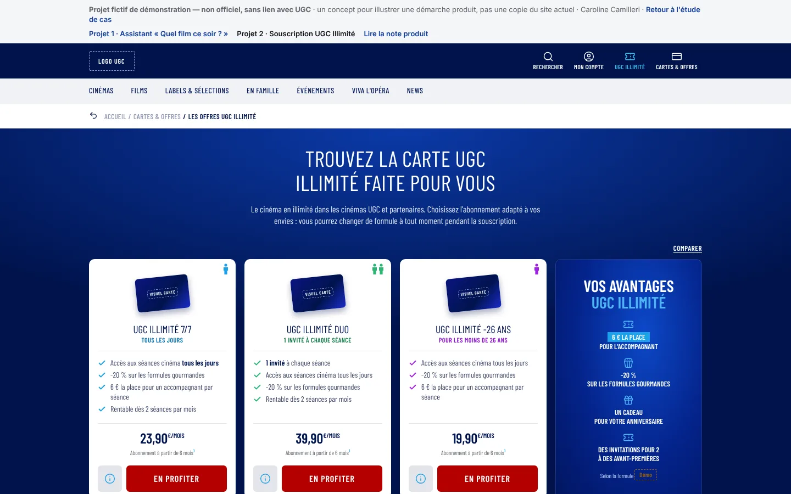
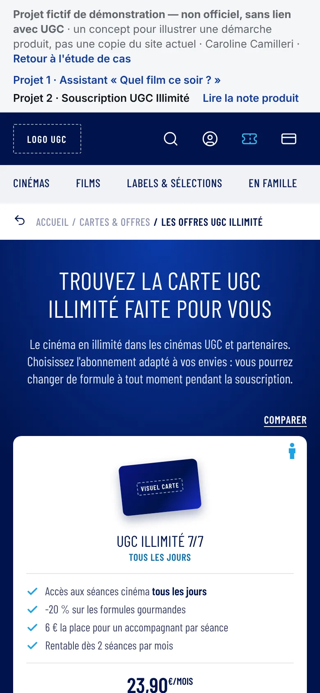

Assistant de choix de séance et parcours d'abonnement
Deux hypothèses produit, deux prototypes cliquables et une note produit pour chacun.
- Livrable
- Deux prototypes : l'assistant « Quel film ce soir ? » et la souscription à UGC Illimité
- Réalisé avec
- Claude Code, à partir d'un design system que j'ai préparé
- Durée
- Publié en deux jours, en huit livraisons successives. Temps passé au total : [À COMPLÉTER PAR CAROLINE]
1Le contexte
J'ai exploré deux moments du parcours d'un spectateur : choisir une séance et s'abonner. Pour chacun, j'ai formulé une hypothèse et construit un prototype pour la rendre testable.
Ce sont des hypothèses, pas un diagnostic des outils existants, dont je ne connais ni les données d'usage ni les contraintes techniques.
Les deux hypothèses
- Assistant « Quel film ce soir ? » : une demande en langage naturel raccourcit le temps de choix et facilite le passage à la réservation, sans remplacer la recherche classique.
- Souscription à UGC Illimité : un parcours plus clair, sur ordinateur comme sur mobile, réduit les abandons et les questions au service client, et mène plus vite à une première séance.
2Le problème et la cible
Pour choisir une séance, le spectateur croise le film, l'horaire, le cinéma, la version et l'âge de ceux qui l'accompagnent, au prix de nombreux allers-retours. Le futur abonné, lui, peut être freiné par des documents demandés en cours de route ou par un récapitulatif financier confus.
Les six freins supposés de la souscription
- Au moment de payer, l'offre choisie n'est plus visible.
- On ne sait pas combien d'étapes il reste, et un retour en arrière peut effacer la saisie.
- La photo et les justificatifs sont découverts en cours de route.
- Une photo refusée après coup retarde l'activation de la carte.
- Promotion, frais, mensualités et engagement se mélangent.
- Après le paiement, on ne sait pas comment utiliser sa carte tout de suite.
3Ma démarche avec l'IA
J'ai préparé en amont un design system détaillé, avec une section d'instructions adressée à Claude Code : lire ce fichier avant toute génération, réutiliser les composants, ne jamais présenter le prototype comme un service officiel. Le projet a ensuite avancé par petites livraisons, chacune relue avant la suivante.
Le brief et le design system
Le fichier compte 40 sections : couleurs, typographie, grille et responsive, composants (cartes de film, séances, formulaires, fenêtres), modèles de page, principes de réservation, accessibilité, ton de l'interface et règles de qualité avant livraison.
Il pose aussi des interdits visuels, par exemple pas d'esthétique générique « IA » et pas de logo redessiné ou modifié.
Itérations, corrections et refus
L'historique des versions montre la progression :
- refonte de l'assistant avec le design system, puis habillage aligné sur les codes d'une application mobile de cinéma ;
- ajout d'une vue site web pour montrer le même assistant sur deux canaux ;
- simulation de la réservation après « Réserver » ;
- affiches de films fictives générées par IA en plusieurs passes : une image a été écartée et le titre d'origine d'un film rétabli ;
- page des offres recalée sur des valeurs relevées sur des captures du site public ;
- ajout d'un encart « Pourquoi ce prototype ? » qui précise que c'est un concept, pas une copie de l'existant.
Ce que j'ai refusé ou fait corriger, et pourquoi : [À COMPLÉTER PAR CAROLINE]
Les vérifications et un choix assumé
- Exactitude : offres, tarifs et engagements relevés sur des captures datées du site public. Les valeurs inventées (frais d'adhésion, règles de photo, date de prélèvement) sont marquées « Démo ».
- Marque : logo et visuels officiels non utilisés, remplacés par des emplacements signalés.
- Une IA simulée : dans la démo, la demande est interprétée par un moteur de règles qui tourne dans le navigateur, pas par un modèle d'IA. Aucune donnée n'est envoyée. La note produit prévoit ce moteur comme solution de repli si le modèle d'IA ne répond pas.
- Rendu mobile et accessibilité : [À COMPLÉTER PAR CAROLINE : ce qui a été vérifié]
4Le livrable
Deux prototypes cliquables, chacun accompagné de sa note produit. La réservation, la souscription et le paiement sont simulés : aucune donnée n'est transmise.


Ce qui fonctionne dans les prototypes
Assistant « Quel film ce soir ? »
- Une demande libre, avec des exemples, qui donne trois séances tirées d'un programme fictif (10 films, 3 cinémas, ce soir et demain).
- Le même assistant en vue application mobile et en vue site web.
- Une réservation simulée en quatre écrans : nombre de places, plan de salle, récapitulatif, confirmation.
- Une note produit : problème, hypothèse, indicateurs de succès, plan de test utilisateur, points à cadrer avec la DSI.
Souscription à UGC Illimité
- Une page des offres avec six formules et un comparateur.
- Un parcours en six étapes : offre, compte, informations, photo et justificatifs, récapitulatif financier et paiement simulé, carte dématérialisée.
- Une note produit : six améliorations (constat supposé, proposition, indicateur), une priorisation entre gains rapides et chantiers avec la DSI, les prochaines étapes.

5Ce que le cas démontre
- Démarche produit : du problème à l'hypothèse, puis à un prototype testable et à des indicateurs.
- Priorisation : distinguer les gains rapides des chantiers qui demandent la DSI.
- Conception multicanale : un même service pensé pour le mobile et le web.
- Usage raisonné de l'IA : garde-fous prévus dès la conception. L'IA ne propose qu'une séance qui existe, et la recherche classique reste disponible.
6Limites et suites possibles
L'IA de l'assistant est simulée, le programme est fictif et le paiement n'existe pas. Aucun test utilisateur n'a été mené, et je n'ai eu accès à aucune donnée réelle du parcours.
Les suites à donner
- Partir des données réelles du parcours pour situer les abandons.
- Tester les prototypes avec cinq ou six personnes, sur mobile en priorité.
- Cadrer avec la DSI : programme et places en temps réel, coût et temps de réponse de l'IA, données personnelles, prélèvement et carte dématérialisée.
- Fixer les objectifs chiffrés sur l'état initial, puis déployer par lots et mesurer chaque amélioration.
7Outils utilisés
Outil utilisé pour les affiches : [À COMPLÉTER PAR CAROLINE]